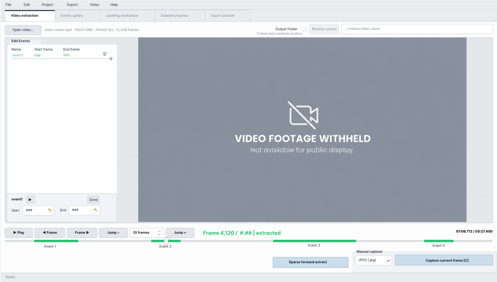
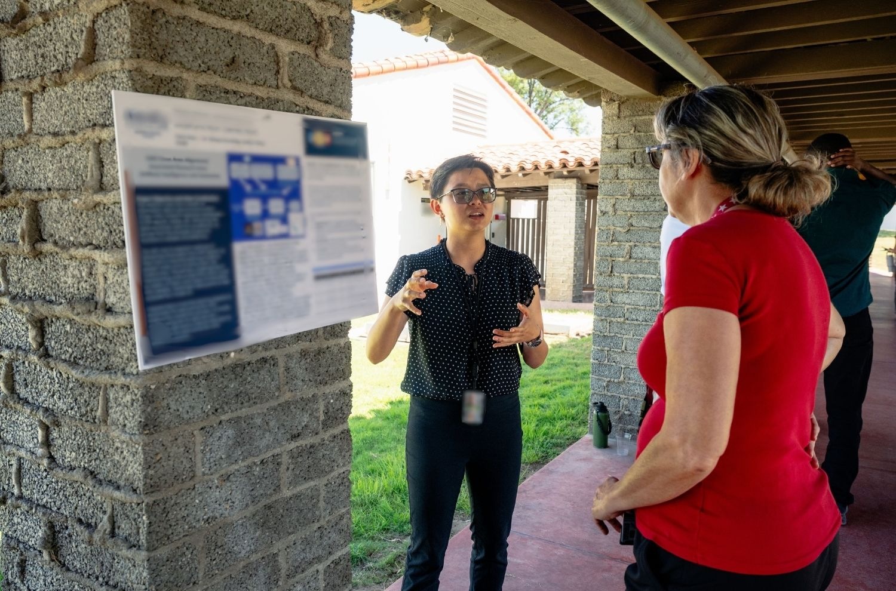

NREIP Internship
Naval Research Enterprise Internship Program
Offline Video Annotation Platform
Built an air-gapped desktop application that converts raw video into organized, training-ready computer vision datasets. Built a suite of 600 unit and integration tests; developed for a workflow involving approximately 100 GB of video data.
End-to-end workflow for:
- Event extraction
- AI-assisted annotation for bounding boxes & keypoints
- Dataset management
- YOLO-ready export with event-aware train/test splitting to prevent data leakage.
Estimated impact: Reduced an approximately 8-hour weekly labeling workflow to an estimated 2 hours.


Unstructured PDF Ingestion Pipeline
Developed a layout-aware Docling pipeline to transform inconsistently formatted technical reports into standardized Markdown, preserving document hierarchy and tabular data for downstream analysis.
Note: I was honored to place 3rd of 30 interns for the final technical presentation to base leadership!